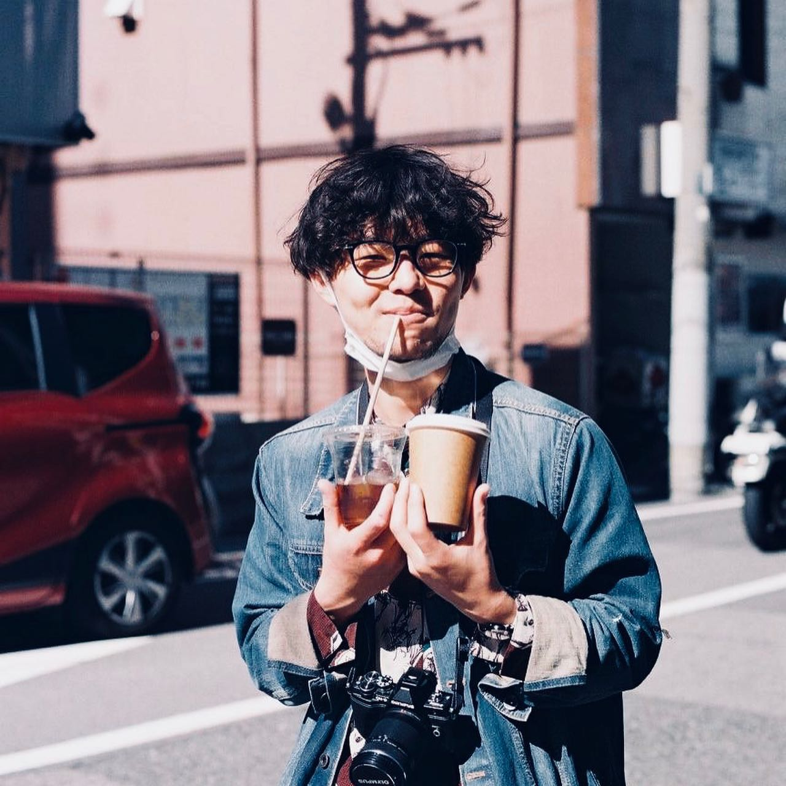
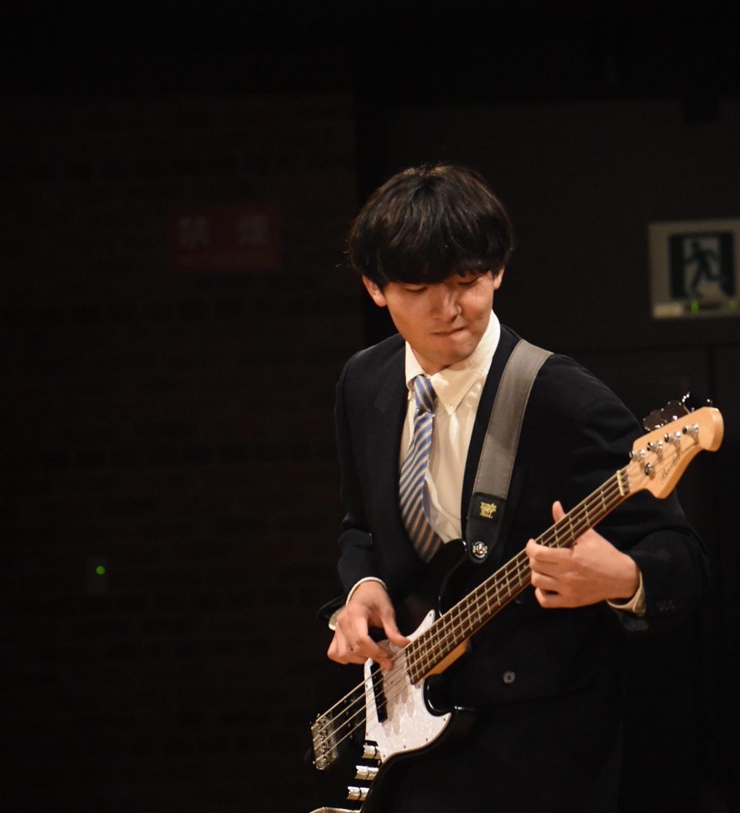
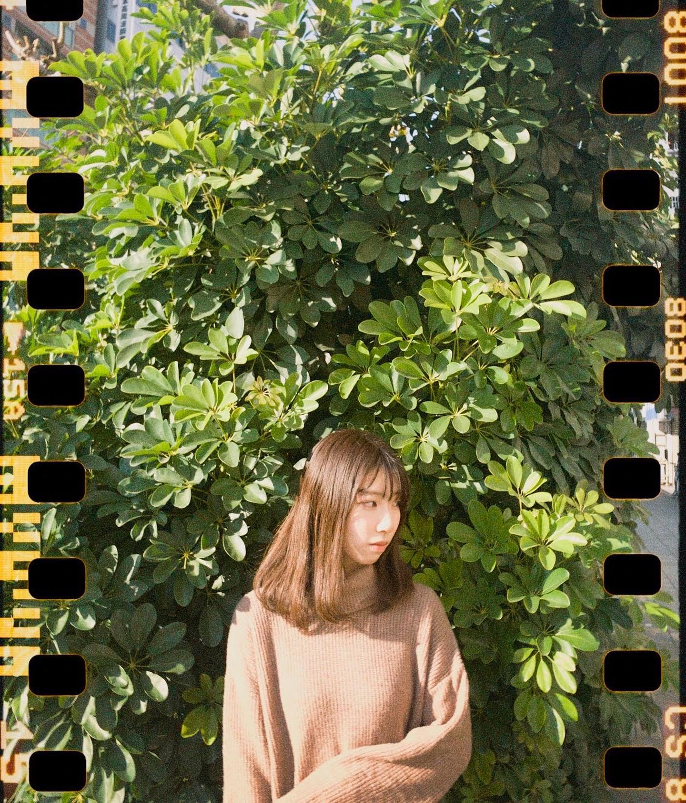

川上諒馬
店主・珈琲
喫茶けけけの言い出しっぺ。珈琲を淹れながら、店の全体を見ています。
- 趣味
- 珈琲、読書、部屋の模様替え
- 写真
- テーマは「独り」
- coffee song
- ロープウェー / cero
喫茶けけけは、写真好きの3人で営んでいます。それぞれの担当と、写真の話を少しだけ。

店主・珈琲
喫茶けけけの言い出しっぺ。珈琲を淹れながら、店の全体を見ています。

フード
キューバサンドや滷肉飯など、ごはんものを担当。台湾まで調査に行く本気派です。

お菓子
バスクチーズケーキやパンナコッタなど、お菓子を担当。光の入る席がお気に入りです。
試作や仕込みの裏側は、記録（Journal）とInstagramで発信しています。